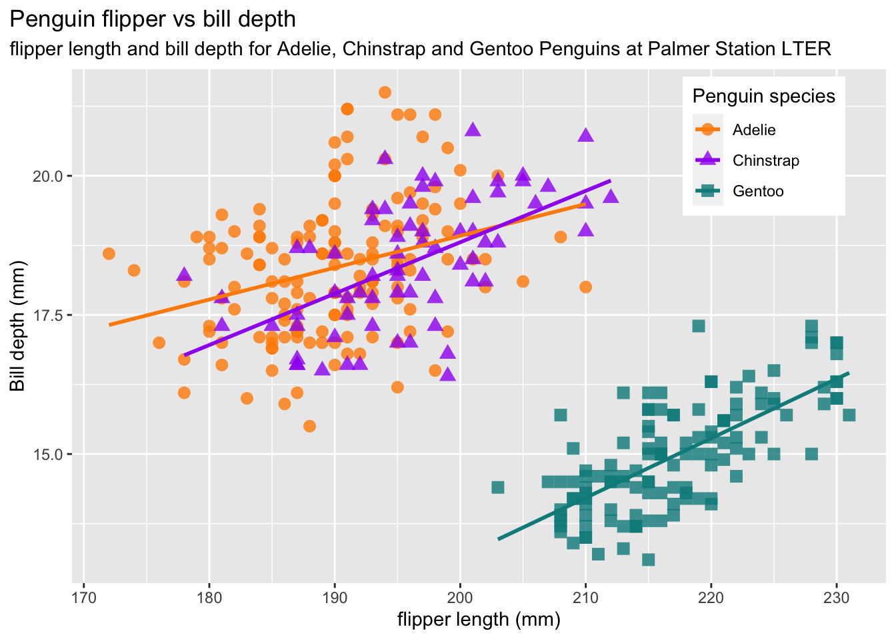
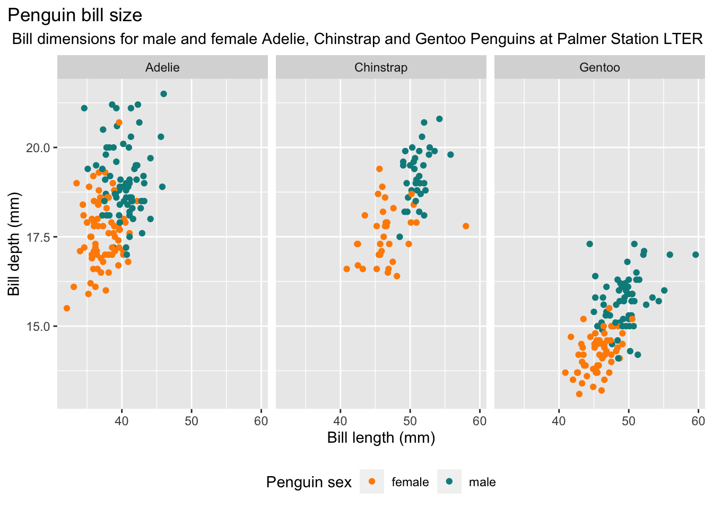

| Longitud_pico(mm) | Ancho_pico (mm) | Longitud_aleta(mm) | Peso (g) |
|---|---|---|---|
| 5.459584 | 1.974793 | 14.06171 | 801.9545 |
Entrega 1
Estudio de datos sobre los pingüinos
A partir de la librería palmerpenguins vamos a hacer un estudio de los datos obtenidos. Tenemos 344 observaciones y cada observación cuenta con 8 variables. 3 variables cualitativas (especie, isla y sexo) y 5 cuantitativas (longitud y anchura del pico, longitud de aleta, peso y año). Cabe remarcar que a pesar de ser un valor numérico, el año podría considerarse como una variable cualitativa. También es importante notar que no tenemos una distribución uniforme de pingüinos por especies o por islas. Hay 68 individuos de la especie Gentoo y 152 (más del doble) de la especie adelie. Análogamente hay 52 pingüinos en Torgersen mientras que Biscoe acumula 168 (más del triple).
Veamos la desviación típica de las variables cuantitativas
La variable con mayor desviación típica es el peso ya que es la que tiene valores más grandes con respecto a las otras variables.
Ahora hagamos el mismo estudio con la media:
| Longitud_pico(mm) | Ancho_pico (mm) | Longitud_aleta(mm) | Peso (g) |
|---|---|---|---|
| 43.92193 | 17.15117 | 200.9152 | 4201.754 |
Y por último observemos que pasa con la mediana:
| Longitud_pico(mm) | Ancho_pico (mm) | Longitud_aleta(mm) | Peso (g) |
|---|---|---|---|
| 44.45 | 17.3 | 197 | 4050 |
También podemos preguntarnos como cambian estos datos estadísticos dependiendo de las variables diferentes que nos presenta el estudio. Por ejemplo vamos a ver las medias dependiendo de especie y de la isla a la que pertenecen. Primero veamos por especie:
| Largo_pico(mm) | Ancho_pico (mm) | Longitud_aleta(mm) | Peso (g) |
|---|---|---|---|
| Adelie | 38.79139 | 18.34636 | 189.9536 |
| Chinstrap | 48.83382 | 18.42059 | 195.8235 |
| Gentoo | 47.50488 | 14.98211 | 217.1870 |
Y después veamos por isla:
| Largo_pico(mm) | Ancho_pico (mm) | Longitud_aleta(mm) | Peso (g) |
|---|---|---|---|
| Biscoe | 45.25749 | 15.87485 | 209.7066 |
| Dream | 44.16774 | 18.34435 | 193.0726 |
| Torgersen | 38.95098 | 18.42941 | 191.1961 |
Hay diferencias significativas en los dos casos, por especies y por isla. Ahora que ya hemos visto los resultados más generales ahora podemos hacernos preguntas sobre las diferentes relaciones que puede haber entre diferentes medidas.
Veamos que relación hay entre la longitud del pico y la masa de los pingüinos:
En general, cuanto más largo es el pico, más masa tiene el pingüino. También se observa que la especie Adelie es la especie con el pico más corto y entre las otras dos especies, a pesar de compartir una longitud de pico similar, los pingüinos de la especie Gentoo son en general más pesados.
Veamos si hay alguna relación entre la longitud de la aleta y el ancho del pico.
Observamos que dentro de una misma especie pinguinos con aletas largas tienden a tener picos más anchos. Esta relación se da sobretodo en pingüinos de la especie Chinstrap y Gentoo. Además los pingüinos de la especie Adelie y Chinstrap tienen picos más anchos y aletas más cortas, en contraste con los de la especie Gentoo que tienen aletas más largas y picos más finos.
Nos preguntamos ahora como varían los picos según la especie y sexo.

El gráfico superior revela que los pingüinos macho tienen un pico más largo y ancho que los pingüinos hembra. También se observa que los pingüinos adelie y Chinstrap comparten un grosor de pico similar, pero los pingüinos Chinstrap tienen el pico más largo. Los pingüinos Gentoo tienen una longitud de pico similar a los pingüinos Chinstrap, pero tienen el pico más fino, por lo que se podría decir que la especie con el pico más grande es la especie Chinstrap.
Finalmente, estudiaremos si la isla en la que habitan los pingüinos tiene algún efecto sobre su peso.

Biscoe es la isla con más variación de peso con diferencia, también es la isla con mayor número de observaciones por lo que es lógico que haya más variación. Además los pingüinos de la isla Biscoe son más pesados en relación a los pingüinos de las otras dos islas, que tienen una distribución de peso bastante similar la una de la otra.